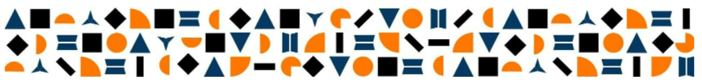
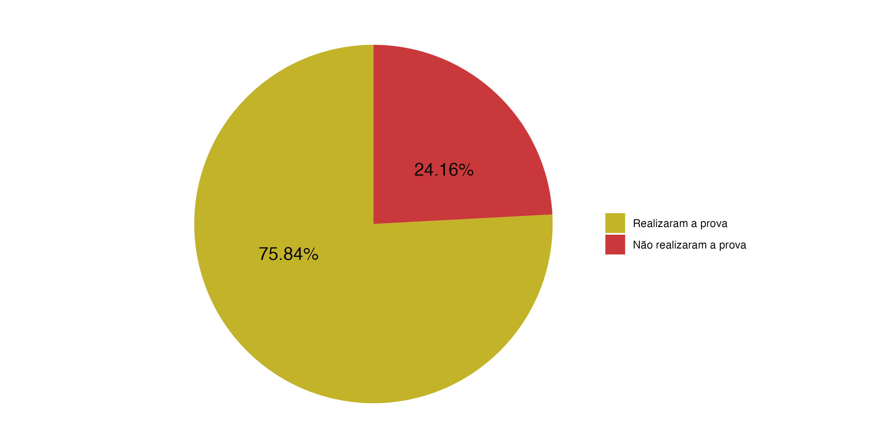

Avaliação Diagnóstica 2022
Relatório Geral da Rede
Seja bem-vindo(a)!
Navegue na página clicando nos links ou
rolando a tela do seu computador/celular.
SEÇÕES
- Apresentação
- Taxa de Participação
- Níveis de Desempenho
- Distribuição de estudantes por ano de escolaridade em cada nível de desempenho
- Percentual de acertos por ano de escolaridade
- Rendimento das escolas por ano de escolaridade e disciplina
Apresentação
A Avaliação Diagnóstica 2022 objetiva produzir informações sobre a situação de aprendizagem dos estudantes do ensino fundamental da Rede Municipal de Educação de Niterói, que possibilitem potencializar as ações pedagógicas desenvolvidas no município, bem como (re)formular políticas públicas educacionais.
Tendo em vista a compreensão do cenário da educação de Niterói no contexto de pós-pandemia, consideramos fundamental a aplicação de instrumentos avaliativos que colaborem para a produção de um diagnóstico sobre a aprendizagem dos estudantes, a fim de que os esforços de professores e gestores (escolares e da Secretaria) estejam voltados para as necessidades identificadas. Desse modo, a Avaliação Diagnóstica 2022 constitui-se como um dos instrumentos necessários para a verificação das habilidades já desenvolvidas pelos estudantes. Trata-se de uma avaliação padronizada, aplicada aos estudantes do 3º, 4º, 6º e 8º anos do ensino fundamental, formulada com questões de Língua Portuguesa e Matemática, baseadas na Teoria de Resposta ao Item (TRI). As competências avaliadas envolvem leitura e resolução de problemas. Para a elaboração das avaliações a Casa de Avaliação e Formação (CAF) contou com a parceria de professores da Rede, responsáveis pela produção dos itens de prova. Os resultados apresentados neste Relatório Geral são expressos em níveis progressivos, de acordo com o número de acertos na avaliação, o que pressupõe uma organização do menor para o maior desempenho (do Nível 1 ao Nível 5). As informações apuradas estão disponibilizadas na seguinte ordem:
Níveis de desempenho alcançados pelos estudantes avaliados; Percentual de estudantes, por ano de escolaridade, em cada nível de desempenho; Percentual de acerto dos estudantes por ano de escolaridade; Rendimento das escolas por ano de escolaridade e disciplina.
Este Relatório estará disponível em ambiente virtual e será socializado com as equipes que atuam na Secretaria para discussão coletiva. Contamos com a parceria de todos para que os dados aqui apresentados sejam observados e propiciem ações que contribuam para a correção de rumos das estratégias pedagógicas adotadas na Rede de Niterói.
Taxa de Participação
O gráfico abaixo apresenta um comparativo entre estudantes presentes e ausentes na Avaliação Diagnóstica 2022.

A seguir uma tabela comparativa com todos os dados relacionados à presença e ausência dos estudantes.
O número da coluna Estudantes estão de acordo com o Mapa Estatístico enviado pelo CIDaPE em 25/04.
Níveis de Desempenho
Os níveis de desempenho foram estabelecidos de forma progressiva, considerando o quantitativo de acerto dos estudantes nas provas, conforme tabela a seguir:
| MÉDIA DO RENDIMENTO | NÍVEL DE PROFICIÊNCIA |
|---|---|
| 0,0 a 2,9 | Nível 1 |
| 3,0 a 4,9 | Nível 2 |
| 5,0 a 6,9 | Nível 3 |
| 7,0 a 8,9 | Nível 4 |
| 9,0 a 10,0 | Nível 5 |
Faz-se necessário saleintar que os resultados apresentados abaixo consideram apenas os dados relacionados aos estudantes que realizaram a avaliação.
Distribuição dos estudantes por ano de escolaridade em cada nível de desempenho
Geral
A tabela abaixo apresenta o percentual de estudantes em cada um dos níveis por ano de escolaridade.
3º ano

4º ano

6º ano

8º ano

Percentual de acertos por ano de escolaridade
A análise abaixo apresenta os percentuais de acertos por disciplina e ano de escolaridade. Espera-se que tais gráficos permitam uma análise macro dos itens relacionados às provas disponíveis nos seguintes endereços:
3º ano

4º ano

6º ano

8º ano

Rendimento das escolas por ano de escolaridade e disciplina
3º ano
4º ano
6º ano
8º ano